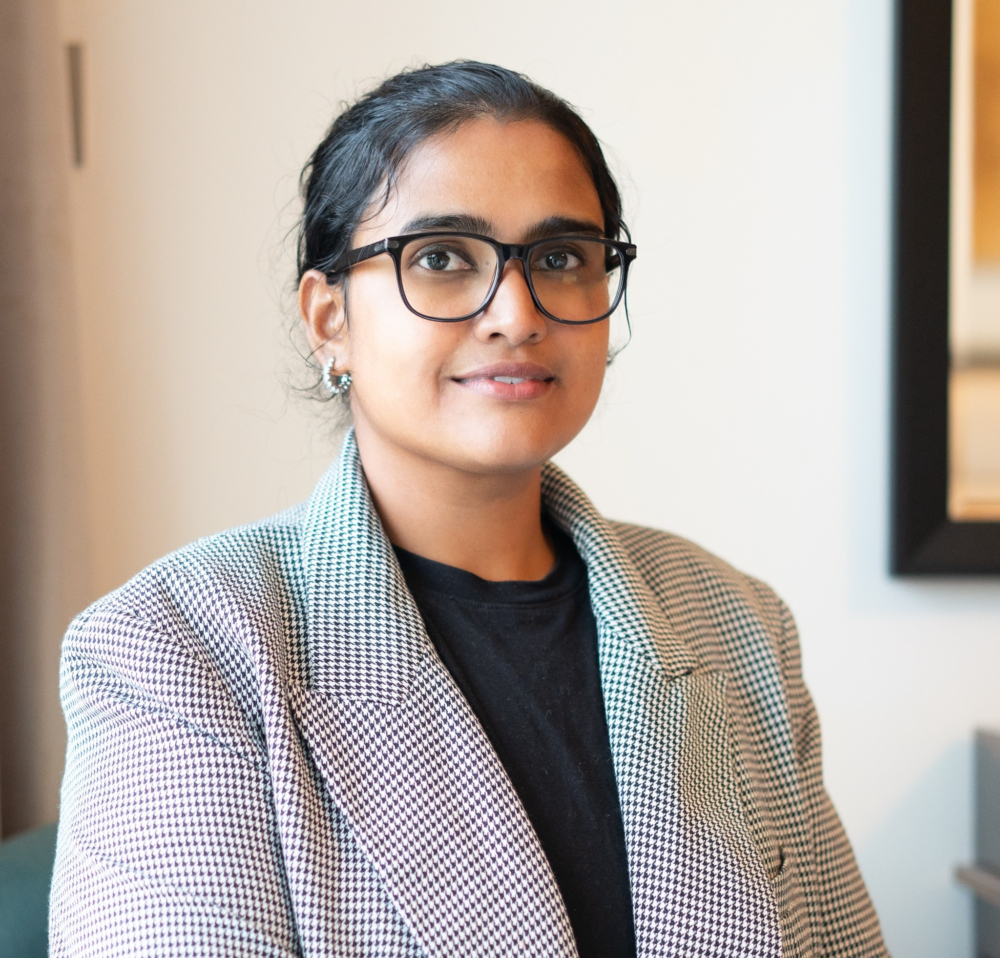

Beyond the Healthy Migrant Paradox
An investigation of health inequalities among non-migrant, first-generation and second-generation populations in Switzerland using European Social Survey data.
Explore project on GitHub ↗PUBLIC HEALTH · RESEARCH · GOVERNANCE · CREATIVITY
I'm Sumana Shivaprakash, a public health professional interested in epidemiology, health inequalities and meaningful research. I bring together public health and governance experience with a growing portfolio of independent research.
Explore my workGet in touchBased in the UAE · Open to research and professional collaborations

A LITTLE ABOUT ME
My work sits at the intersection of public health, research and organisational improvement.
I hold a Master of Public Health from Northumbria University and a Bachelor of Homoeopathic Medicine and Surgery from Rajiv Gandhi University of Health Sciences. Alongside professional experience in governance and assurance, I develop research projects in epidemiology and population health.
I value clear communication, careful analysis, reproducible work and curiosity across disciplines.
SELECTED WORK
Explore questions, methods and findings from my research and analytical projects.
An investigation of health inequalities among non-migrant, first-generation and second-generation populations in Switzerland using European Social Survey data.
Explore project on GitHub ↗A systematic review and meta-analysis examining the effects of kangaroo mother care on weight gain in low-birthweight neonates.
Manuscript submitted to BMC Pediatrics. Publication status to be updated.
A portfolio project exploring temperature and air-pollution exposure windows in relation to maternal and birth outcomes using simulated data.
A modelling portfolio using simulation to explore how infectious diseases may spread through populations.
Independent and simulated-data projects are identified clearly and are not presented as empirical findings.
PROFESSIONAL JOURNEY
Experience across public health and health-related settings, with an interest in prevention and population wellbeing.
Experience supporting multi-site governance, compliance reviews, risk oversight, performance reporting and quality improvement.
Developing skills in epidemiological methods, evidence synthesis and reproducible research using R and Python.
BEYOND MY PROFESSION
Outside work, I enjoy camouflage art, abstract art and exploring architecture. These interests encourage me to notice patterns, consider different perspectives and think creatively about complex problems.
For me, creativity and analysis are not opposites: both begin with observation and curiosity.
LET'S CONNECT
I welcome conversations about public health, research, collaboration and professional opportunities.
Email meLinkedInGitHub